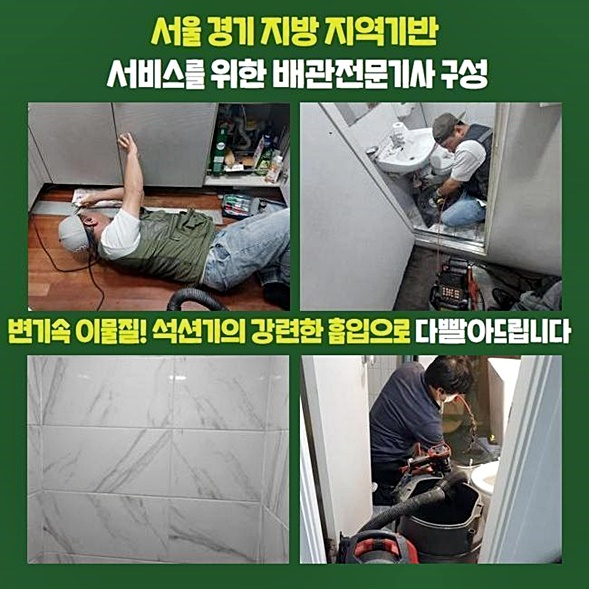
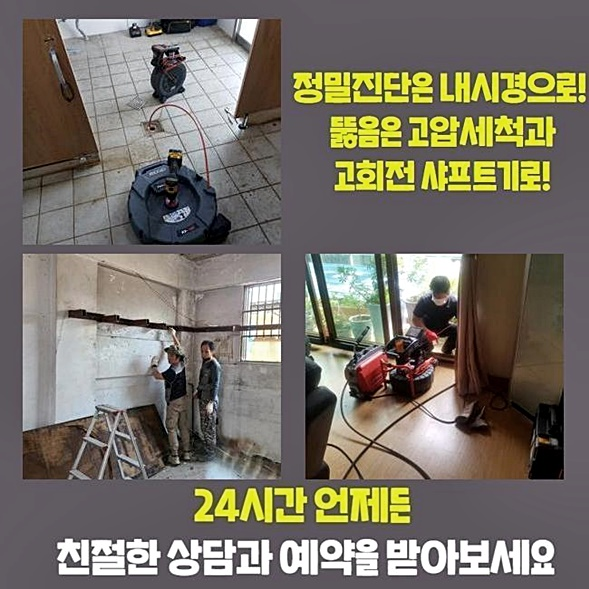
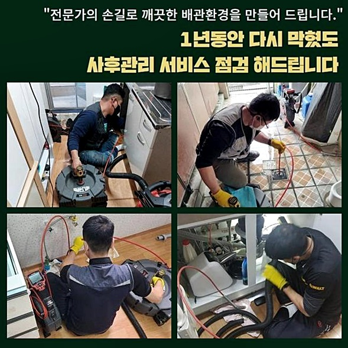
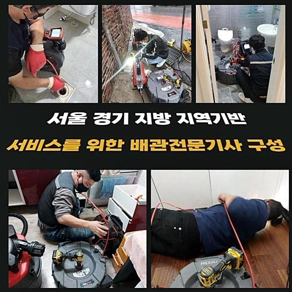
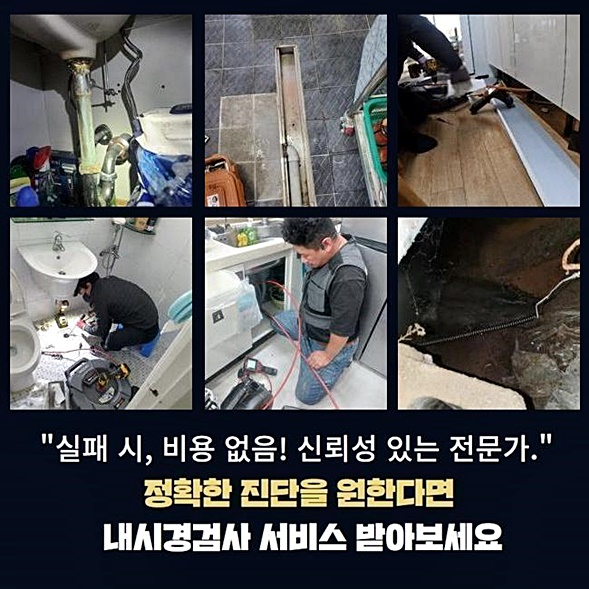
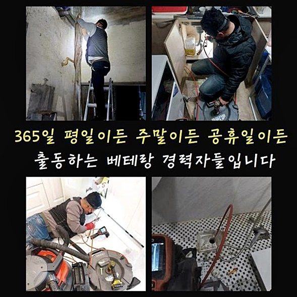

🏠 동대문 장안동오수관뚫음 휘경동 하수구뚫어주는업체 물샘전문업체
용인 하수구막힘 전문 시공 후기

📋 작업 개요
- 위치: 용인
- 서비스 유형: 하수구막힘, 배관막힘, 누수수리, 역류해결, 뚫는업체, 배관청소, 고압세척, 설비공사
- 작업 일시: 2024. 9. 5. 12:19
- 업체명: 하수구수사대 (010-5615-2118)
🔍 문제 상황
동대문 장안동오수관뚫음 휘경동 하수구뚫어주는업체 물샘전문업체
배수관 막힘의 현상과 강도는 건물의 설계나 활용 방식에 따라 차이가 있어요
어쩔 수 없이 가정집에 비해서 카페나 레스토랑 등의 상가 빌딩에서 배수관 막힘이 더 나빠질 수 밖에 없어요
물론 빌딩의 건축 시기나 어떤 방식의 관리를 해온 방식에 따라 상이함은 생기기 때문에 전부 동일하다고 말하기는 곤란합니다
그래서 많은 상가에서 함께 하수가 안빠지거나 계속해서 징후가 나타날때는 꼭 전문배관기사를 이용해 근원을 확인하고 문제를 해소해야 하죠
이 글에서 보여드릴 우리의 전문수리팀이 방문드린 작업현장도 상업 시설에서 발생한 현상이었어요
아는 사람을 통해서 저희 기술자를 소개 받았다 들었는데 툭하면 막힘 현상들이 출현하니 완벽하게 처리가능한 수리업체를 수소문하고 있었다더군요
저희 업체가 도착한 다음 현장의 상태를 살펴보니 건물 안에 입주 중인 여러 호실에서 동시에 하수관이 막히는 상황이 발생하고 있었습니다
상업빌딩이기 떄문에 운영중에 있는 점포내에서 물이 흐르지 않거나 역류하는 현상이 시작된 것이 보였습니다
그러나 이런 하수구 막힘은 원인없이 생기는게 아니므로 문제가 되었습니다

🔎 원인 분석
💡 전문가 진단: 정밀 진단 장비를 사용하여 슬러지의 고착 여부를 판명하고 타격/세척 작업을 실시했습니다.
한번 문제가 발생하면 상태도 심각하고 화장실 내부의 막힘 역시 심각하기 때문에 뚫어내려면 구체적인 해결법을 생각해내야하는 상황이 되었습니다
의뢰인께서 많은 이야기를 듣고 사전에 확인해보셨는지 하수배관막힘을 책임지고 있는 저희업체에 하수관 고압수 세척을 하고 싶다며 물어보셨습니다
고압수 클리닝기기는 찰나에 매우 높은 압력을 가해 대량의 물을 배수관으로 주입하여 하수관로 깊숙한 곳의 뭉친 찌꺼기들을 빼낼 수 있는 장치예요
그런이유로 조건에 따라 알맞게 활용하면 빠르게 막힘문제를 해결하는 것은 맞아요
그렇지만 모든 곳에 고압수 세척장치를 적용할 수 있는 것은 아님을 기억해두셔야 해요
고압세정장치는 압력을 높일 수 있는 동력엔진과 연결이 필요해서 작업현장으로 적절치 않은 장소라면 활용하기가 곤란합니다
아울러 아파트와 연립등의 거주지역에서는 하수관 고압세정보다는 불순물을 빨아들이는 석션시공이나 샤프트기구를 적용한 파쇄와 정리 작업들이 효과가 좋을 수 있어요
하지만 문제의 상업 시설에서 상당한 시일동안 막힘문제가 몇번이고 발생했어도 적절한 관리들을 하지 않았기 때문에 막힘 장애가 심각한 상황이었습니다
배수구 안에 슬러지덩어리가 무더기로 누적된다면 이것을 제거하는 것도 복잡하지만 배수관에 직접적인 악영향이 생길 수 있는 점이 걱정되는 사안이었습니다
음식점 또는 기름을 사용해 요리하는 매장에서 배출하는 기름뭉치와 오일찌꺼기는 오랜시간 배수파이프 안에서 응집되면 그 크기나 하중이 더해지는 일이 많아요
그래서 슬러지덩어리가 무더기로 모이게 될수록 배수배관들이 무게가 더해져서 결합된 지점이 헐거워져서 주저앉는 상황이 일어날 수 있어요

🔧 작업 과정
우선 배수관의 모습을 세심하게 조사하여 고압수 클리닝이 진행될 수 있는지 여부를 확인하고 하수배관 클리닝을 시작하게 되었어요
접합부위를 상세히 확인해보니 배수관로가 점차 처지는 징후를 보였으나 해당현상은 불순물을 없애준다면 원상복귀될 것으로 판단하고 약해진 위치만 금속밴드로 고정해주었습니다
이렇게 사전에 초기 조치를 해두지 않고 강력한 압력을 적용한다면 배수구에 손상이 생길 수 있으므로 더 큰 곤란이 생길 수 있겠죠
고정시키는 작업을 마무리하고 드디어 제대로 세척작업을 개시하기 위해서 하수배관 내시경기기를 이용할 준비를 했습니다
공동관로가 상당한 길이로 연결된 상태라서 배수구전용 카메라로 배수파이프 안을 분석하는 시간이 많이 소모할 수 밖에 없었죠
하지만 배수관로 작업중에서 핵심적인 과정은 확실한 검진으로 문제원인을 발견하는 것이므로 내시경 탐색 작업을 소홀히 해서는 안됩니다
고압수 세척을 깔끔하게 하기 위해 하수관로 내시경장치를 배관 깊숙한 지점까지 침투시켜 공용 배수배관을 세밀하게 살펴보았습니다
배수파이프 내 케어가 올바르게 이루어지지 않아서 깊은 내부까지 기름뭉치들이 가득한 상태를 발견할 수 있었어요
하수관로를 뚫는 저희 팀은 이 정도 상황이면 고압수 클리닝기구를 이용해서 수리를 하는 것이 옳다는 생각이 들었습니다
이와 같은 상가 지하에 위치된 공용파이프는 길이가 긴 편이 많아서 중간지점에서 일단 청소를 해준 후 보강을 하는 것이 효율이 높습니다
이와 같이 정밀하게 배수관 속의 상황이나 연결 상태를 알아낸 후 시공을 해야 심각한 막힌상태를 처리할 수 있습니다
이런 방식이 아닌 단편적인 방법으로 고장들을 처리하고 나면 증세는 호전되지 않고 또 관로막힘이 발생하는 일이 되풀이 되는거죠
이제부턴 고압세정장치를 활용해서 적극적으로 하수배관 청소를 실행할 시점이예요
문제의 근원이 되는 장소를 파악했으므로 고압세정이 깔끔하게 끝나면 걱정하지 않고 수도를 이용할 수 있으실 거예요
고압수 세척은 순간적으로 다량의 물이 물줄기가 배수파이프 내로 흘러 들어가기에 기술자의 역량이 필수인 과정입니다
고압수 클리닝을 수행하면서 내시경장비를 활용해서 완벽하게 오염물질이 제거되는지도 살펴봤어요
고압 물세척을 마친 후 내시경장치로 안쪽 현황을 살펴본 뒤 통수 테스트까지 몇번이고 수행했는데요 막힘문제 없이 가득부은 물이 정상적으로 배출하는 상태들을 테스트하며 파악했습니다


✅ 작업 완료
하수배관 막힘을 처리하는 저희 전문가는 고객님에게 구체적으로 내용들을 안내드리고 중앙에 공사를 진행한 지점도 정돈한 후 절차를 끝낼 수 있었어요
이렇게 상가에서 배수 장애가 생기면 복잡한 상황이 생기므로 실시간 문제처리가 매우 중요합니다
이젠 많은 우려나 고민들을 접어두고 저희 기술자에게 전화주세요
작은 징후들을 내버려두시게 되면 더 심각한 현상으로 커질 수 있기 때문에 빠른 진단으로 정확하게 조치하겠습니다
어느 누구보다 빠르고 효과적으로 물막힘 현상을 해결해드리겠습니다



⚠️ 베란다 누수 및 방수 관리 방법
- ✅ 비가 많이 올 때 창틀 주변이나 아래층 천장에 얼룩이 생기는지 정기적으로 확인해 보세요.
- ✅ 우수관 주변 실리콘 마감이 들뜨거나 깨진 틈새가 있는지 손상 여부를 수시로 체크하세요.
- ✅ 베란다 바닥 타일의 줄눈(메지)이 소실되면 그 틈으로 물이 침투하여 누수가 유발됩니다.
- ✅ 누수 의심 증상 발견 시 방치하면 아래층 손실이 커지므로 즉시 전문가의 진단을 받으십시오.
💡 핵심 정리
- 확실한 장비 작업(내시경 점검 및 샤프트 스케일링)으로 원인을 뿌리 뽑습니다.
- 작업 후 1년 이내에 동일한 부위 재발 시 100% 무상 A/S 서비스를 보장합니다.
- 서울 · 경기 · 인천 전 지역에 24시간 언제든 긴급 출동할 수 있도록 항시 대기 중입니다.
❓ 자주 묻는 질문 (FAQ)
🚨 용인 하수구막힘 문제로 고민이신가요?
정확한 원인 진단과 확실한 시공으로 재발 없는 해결을 약속드립니다.
24시간 긴급 출동 | 서울 · 경기 · 인천 전지역 | 1년 내 재발 시 무상 A/S